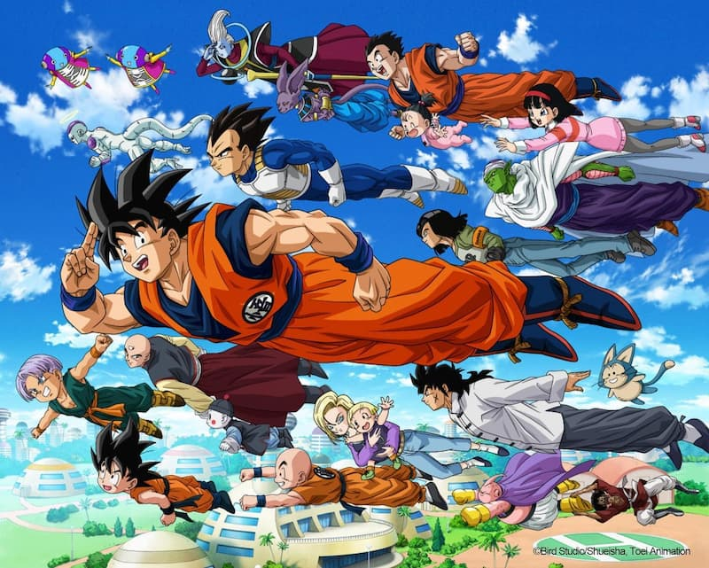

劇情介紹
故事主要描述從少年時期的孫悟空到在天下第一武道會和比克的對決、關於悟空成長的故事。 《七龍珠Z》是從1989年4月26日到1996年1月31日在富士電視台播放，改編原作第195話至第519話的內容，總共播放291集。 故事主要是描述從賽亞人來襲到魔人普烏篇。
悼念鳥山明老師
人物與影響
鳥山明最受歡迎的作品莫過於《七龍珠》，漫畫系列全篇共42本，於1984年開始連載，在日本國內銷量突破1.6億本，國際銷量更高達2.6億本，也讓鳥山明擁有國民級漫畫家的地位。《七龍珠》不止多次被動畫、遊戲、電影等衍生作品，即使連載結束將近30年，周邊商品仍不斷推出，如今隨著鳥山明過世，也讓這個劃時代的作品再次成為話題。